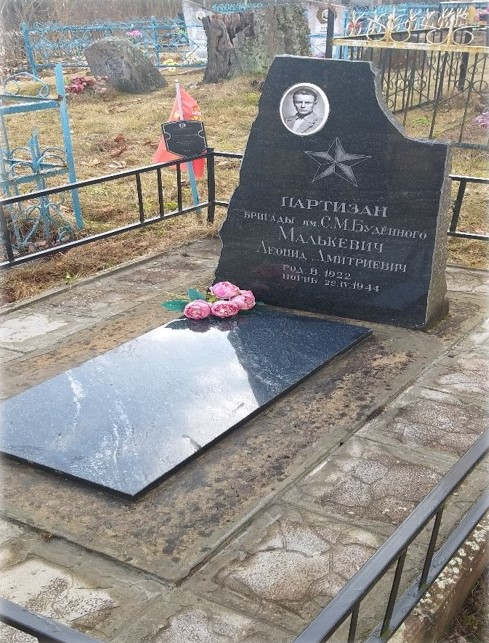
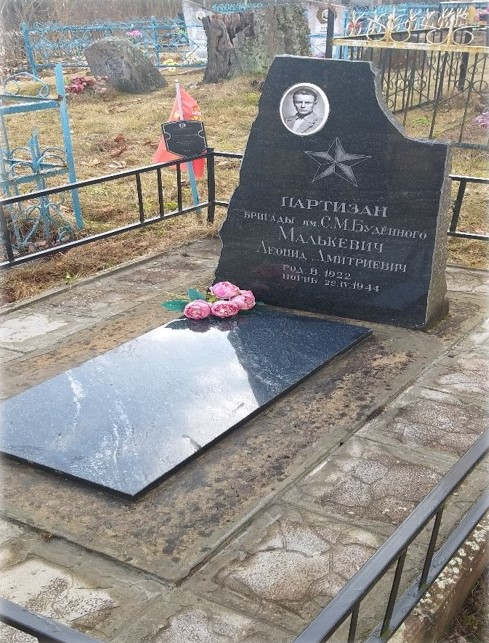
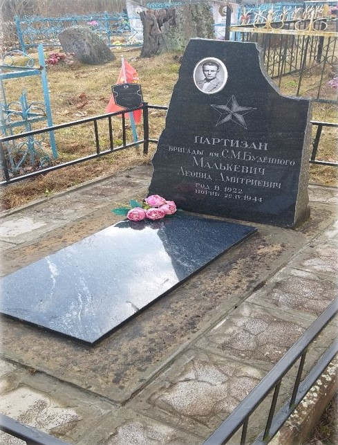
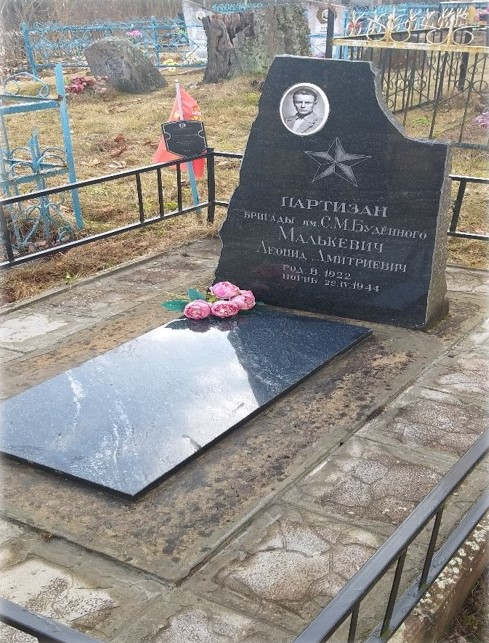

В Великую Отечественную войну с декабря 1941 г. по июль 1944 г. в г.Вилейке и деревнях бывшего Куренецкого р-на действовала коммунистическое подполье. В 1966 г. в честь участников Вилейско-Куренецкого коммунистического подполья и в честь памяти погибших установлен памятник – скульптура партизана Леонида Дмитриевича Малькевича. Леонид Малькевича. родился в 1922 году, в д. Кишкорепы (ныне деревня Малькевичи) Вилейского р-на Минской обл. В 1941 году он окончил школу фабрично-заводского обучения в Гродно. Деревня Малькевичи, где жили родные Леонида, затеряна среди густых лесов. Во время войны в ней и стали собираться народные мстители. Вместе с другими патриотами ушёл в партизанский отряд и Леонид. В отраде им. С. М. Будённого юноша овладел подрывным делом. И там, где проходил юный мститель взрывались вражьи склады, летели под откос эшелоны с живой силой и техникой врага, участвовал в других операциях. По заданию командования отряда пробирался в стан оккупантов, собирал и доставлял партизанам сведения о вражеских гарнизонах в Куренце и Вилейке. В канун Первого мая командование поручило Леониду ответственное задание – пробраться в Вилейку и передать подпольщикам мину. 1 мая 1944 года с кошёлкой в руках, в которой находилась замаскированная мина, он направился в город, однако недалеко от Вилейки был задержан немецким патрулём. Долго издевались они над Ленькам, зверски избивали, желая вырвать сведения о партизанах, но Леонид молчал. Тогда озверевшие фашисты выбили ему зубы, выкололи глаза, перебили руки и ноги и всего израненного повесили на том месте, где задержали, но патриот так и не выдал своих товарищей. На том месте, где его задержали и повесили, в 1966 г. в честь участников Вилейско-Куренецкого коммунистического подполья и в честь памяти погибших установлен памятник – скульптура партизана Леонида Дмитриевича Малькевича. Сам же герой похоронен на кладбище в деревне Стражи Вилейского р-на. В память о Малькевиче в 1950 г. на могиле установлена стела (в 2004 г. установлен новый памятник).